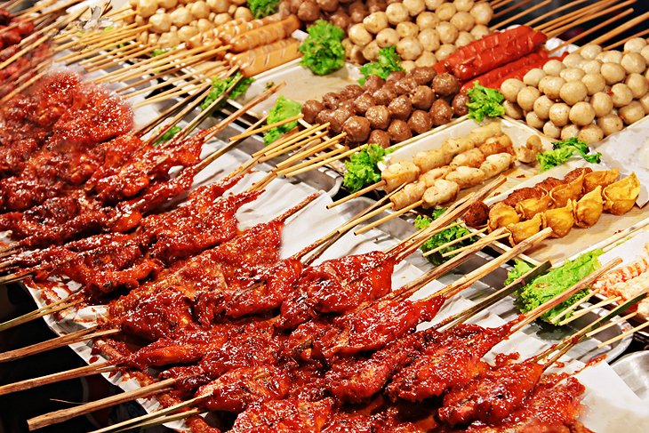
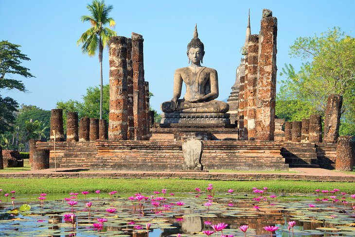
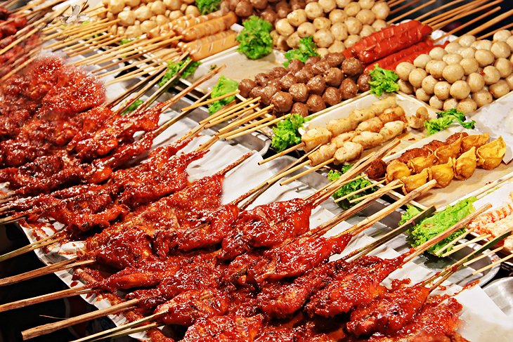
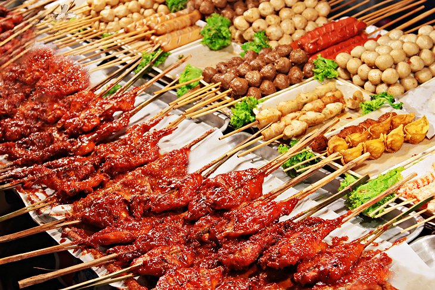
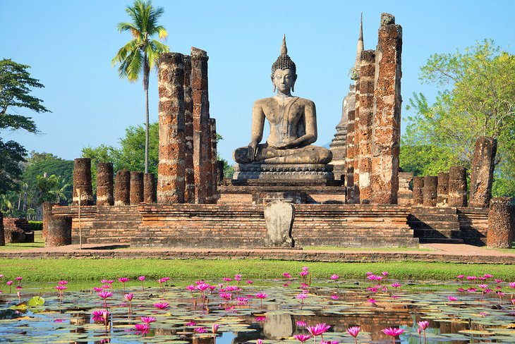
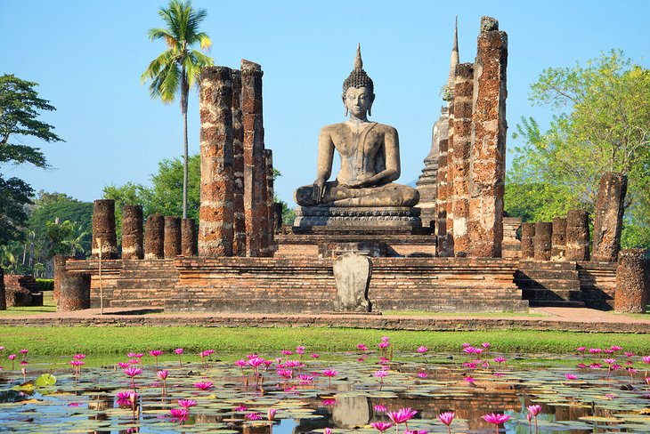

Located at the heart of Bangkok, Thailand, the Grand Palace was a former residence for King Rama I to King Rama V of the Rattanakosin Kingdom. Today, the place is used for hosting royal ceremonies and welcoming the king's guests, State guests, and other foreign dignitaries.
2.Koh Phi PhiThe islands have drawn visitors since the 1980s and were made famous by the film 'The Beach', filmed on the uninhabited Koh Phi Phi Leh. The idyllic scenery, the emerald waters, white sands and palm trees draw in many visitors each year.3.Sunday Walking Street, Chiang MaiEvery Thailand visitor looks forward to cheap and delicious food, and that's exactly what they can find in abundance at Chiang Mai's Sunday Night Walking Street. Vendors sell all kinds of treats here, from the popular pad Thai and chicken satay to samosas, to fried bananas, sweet roti, and fresh fruit shakes.4.Khao Yai National Park.Khao Yai National Park is home to protected habitats for the greatest number of animal species in Thailand. Its food sources attract many charismatic species which can often be viewed by visitors: wild elephant, gaur, dhole, muntjac (barking deer), sambar deer, gibbon, hornbill and macaque.5.Sukhothai Old CitySukhothai was the capital of the first Kingdom of Siam in the 13th and 14th centuries. It has a number of fine monuments, illustrating the beginnings of Thai architecture. The great civilization which evolved in the Kingdom of Sukhothai absorbed numerous influences and ancient local traditions; the rapid assimilation of all these elements forged what is known as the 'Sukhothai style'.

 

 
